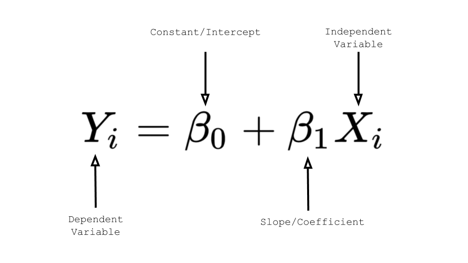
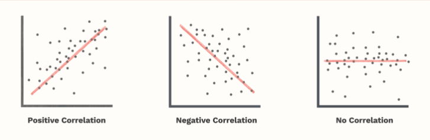
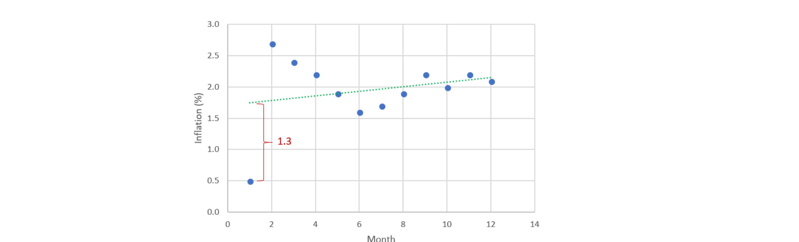

Being in relationship with linear equations
In this section we will be covering following things:
1. Regression in linear equations
a. Simple Linear Regression
b. Multiple Linear Regression
2. Correlation coefficient
a. Equation of correlation coefficient
b. Example problem on correlation coefficient
3. Residuals
a. Intuition behind residual
b. Example problem on residual
4. Coefficient of determination
1. Regression in linear equations
IRegression is a statistical method used in finance, investing, and other disciplines that attempts to
determine the relationship between one dependent variable (usually denoted by Y) and a series of other
variables (known as independent variables).
The two basic types of regression are simple linear regression and multiple linear regression, although
there are non-linear regression methods for more complicated data and analysis.
a. Simple linear regression
Simple linear regression has only one x and one y variable i.e one dependent variable and
one independent variable. For instance, when we predict rent based on square feet alone
that is simple linear regression.

b. Multiple Linear regression
Multiple linear regression has one y and two or more x variables i.e one independent
variable and two or more dependent variables. For instance, When we predict rent based on
square feet and age of the building that is an example of multiple linear regression.

2. Correlation coefficient
* The correlation coefficient is a number calculated from given data that measures the strength and
direction of the linear relationship between two variables: x and y.
* The sign of the linear correlation coefficient indicates the direction of the linear relationship
between x and y.
* When r (the correlation coefficient) is near 1 or −1, the linear relationship is strong; when it
is near 0, the
linear relationship is weak.

A univariate normal distribution is described using just the two variables namely mean and variance. For a
multivariate distribution we need a third variable, i.e., the correlation between each pair
of random variables.
a. Equation of correlation coefficient
The strength of the linear association between two variables is quantified by the correlation coefficient.
Given a set of observations (X1, Y1), (X2,Y2),...(Xn,Yn), the formula for computing the correlation
coefficient is given by
where Sx and Sy stands for standard deviation for variable x and y respectively.
From the above formula we can see that it somehow looks like a z score. We can write
the same equation as follows:
b. Example problem on correlation coefficient
Problem: Given following data points which consist of 2 variables x and y find the correlation coeff.
(X,Y)
( 1, 1)
( 2, 2)
( 2, 3)
( 3, 6)
Solution:
The dataset has 2 dimension or 2 variables, Those are x and y
x = [ 1, 2, 2, 3]
Mean can be calculated as: X̅ = ( 1+2+2+3 ) / 4 = 2
Standard deviation: Sx = 0.816
y = [ 1, 2, 3, 6]
Mean can be calculated as Ȳ = ( 1+2+3+6 ) / 4 = 3
Standard deviation: Sy = 2.16
Hence r = [ ( X 1 - X̅ ) / Sx * ( Y 1 - Ȳ ) / Sy
+ ( X 2 - X̅ ) / Sx * ( Y 2 - Ȳ ) / Sy
+ ( X 3 - X̅ ) / Sx * ( Y 3 - Ȳ ) / Sy
+ ( X 4 - X̅ ) / Sx * ( Y 4 - Ȳ ) / Sy] / n-1
Hence r = [ ( 1 - 2 ) / 0.816 * ( 1 - 3 ) / 2.16
+ ( 2 - 2 ) / 0.816 * ( 2 - 3 ) / 2.16
+ ( 2 - 2 ) / 0.816 * ( 3 - 3 ) / 2.16
+ ( 3 - 2 ) / 0.816 * ( 6 - 3 ) / 2.16] / 4-1
r = 0.946
3. Residuals
a. Intuition: Residual is difference between actual and predicted.
residual = Σ (actual - predicted )
sum of residual squares = Σ (actual - predicted )^2
When we are trying to find the line that best fits our data set we are trying to reduce the residuals
or we can also use sum of residuals for the minimisation task.

b. Example problem on redidual
Problem: Vera rents bicycles to tourists. She records the height (in cm) of each customer
and the frame size (in cm) of the bicycle that customer rented.
After plotting her results, Vera noticed that the relationship between the 2 variables was fairly linear,
so she used the data to calculate the following least square regression equation for predicting the
bicycle frame size from the height of the customer:
y = 0.33 + 0.33 x
What is the residual of a customer with a height of 155 cm who rents a bike with 51 cm frame ?
Solution:
actual frame size = 51 cm
predicted frame size:
y = 0.33 + 0.33 x
= 0.33 + 0.33*155
predicted = 51.48 cm
residual = actual - predicted
= 51 - 51.48
= -0.48 cm
Hence the residual is -0.48 cm
4. Coefficient of determination
The coefficient of determination is a measurement used to explain how much variability of one factor can
be caused by its relationship to another related factor. This correlation, known as the "goodness of fit,"
is represented as a value between 0.0 and 1.0.
In statistics, the coefficient of determination, denoted R² or r² and pronounced "R squared", is the
proportion of the variation in the dependent variable that is predictable from the independent variable.
Given X and Y where Y is dependent variable and X is dependent variable. Ȳ represents the mean of Y
and X̅ represents the mean of X
- Total variation in Y can be defined as Squared Error from Average Ȳ
SEy = ( Y1 - Ȳ )² + ( Y2 - Ȳ )² + ..................... + ( Yn - Ȳ )²
- Variation that is NOT predictable from independent variable can be defined as:
SELINE = ( Y1-(mX1 +b) )² + ( Y2-(mX2 +b) )² + ............. + ( Yn -(mXn +b) ) ²
- Proportion of Variation that is NOT predictable from independent variable can be defined as:
SELINE/SEy
- Proportion of variance that is predictable from independent variable ( r² ) is
= 1 - Proportion of Variation that is NOT predictable from independent variable
= 1 - (SELINE/SEy )
r² = 1 - (SELINE/SEy )
Correlations are good for identifying patterns in data, but almost meaningless for quantifying a model’s
performance, especially for complex models (like machine learning models). This is because correlations
only tell if two things follow each other (e.g., parking lot occupancy and Walmart’s stock), but don’t tell
how they match each other (e.g., predicted and actual stock price).